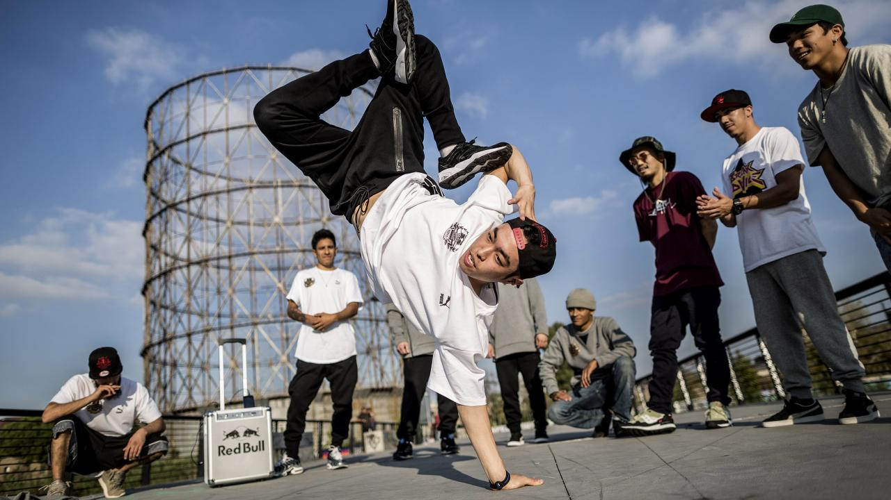

Стили танцев
Hip-Hop
Хип-хоп-танец (англ. hip-hop dance) относится к уличным танцевальным стилям, в основном сопровождаемый хип-хоп-музыкой и той, которая развивалась как часть хип-хоп-культуры. Он включает в себя широкий диапазон стилей, таких как брейк-данс, локинг, поппинг, которые были созданы в 1970 году и стали популярными в США благодаря танцевальным командам. Телевизионное шоу «Soul Train» и фильмы 1980-х годов «Брейк-данс», «Бит-стрит» и «Дикий стиль» рассказали широкой аудитории о данном танцевальном направлении, делая хип-хоп-культуру мейнстримом. Открылись танцевальные студии, занимающиеся хип-хопом, называемым «новым стилем», и испытавшим влияние джаза «джаз-фанком». Классически обученные танцоры развивали эти направления для того, чтобы создавать хореографические номера с хип-хоп-танцорами, которые выступали на улицах. Именно из-за этого развития хип-хоп-танец практикуется и в танцевальных студиях, и на улицах.
Vague
Vogue, или вог — стиль танца, базирующийся на модельных позах и подиумной походке. Отличительные особенности: быстрая техника движения руками, вычурная манерная походка, падения, вращения, обильное количество позировок, эмоциональная игра. Исполняется Vogue под музыку в стиле хаус.
Frame Up
Frame up – это танец, созданный на основе стрип-пластики с элементами джаз фанк, хай хилс и брейк данс. Большая часть элементов исполняется на полу и требует виртуозного владения собственным телом. Техничность и музыкальность – основные «фишки» направления.
Contemporary
Контемп, или контемпорари — современный сценический танец, который включает в себя различные направления. Он появился в Европе и США в 60-х годах 20 века. Фактически контемп стал продолжением танцев модерн и постмодерн. В него также входят элементы классической хореографии, пластики, йоги, пантомимы и др.

High Heels
High heels (танец на высоких каблуках) – это невероятный, яркий, зажигательный микс из таких танцевальных направлений как jazz-funk, vogue, hip-hop, waacking и twerk, в котором самый важный танцевальный атрибут – туфли на высоком каблуке.
Popping
Поппинг или паппинг — стиль танца, основанный на сокращении мышц, создающий эффект резкого вздрагивания в теле танцора — пап или хит. Это делается непрерывно в ритме музыки в сочетании с различными движениями и позами. Танцор, исполняющий паппинг, называется паппером.